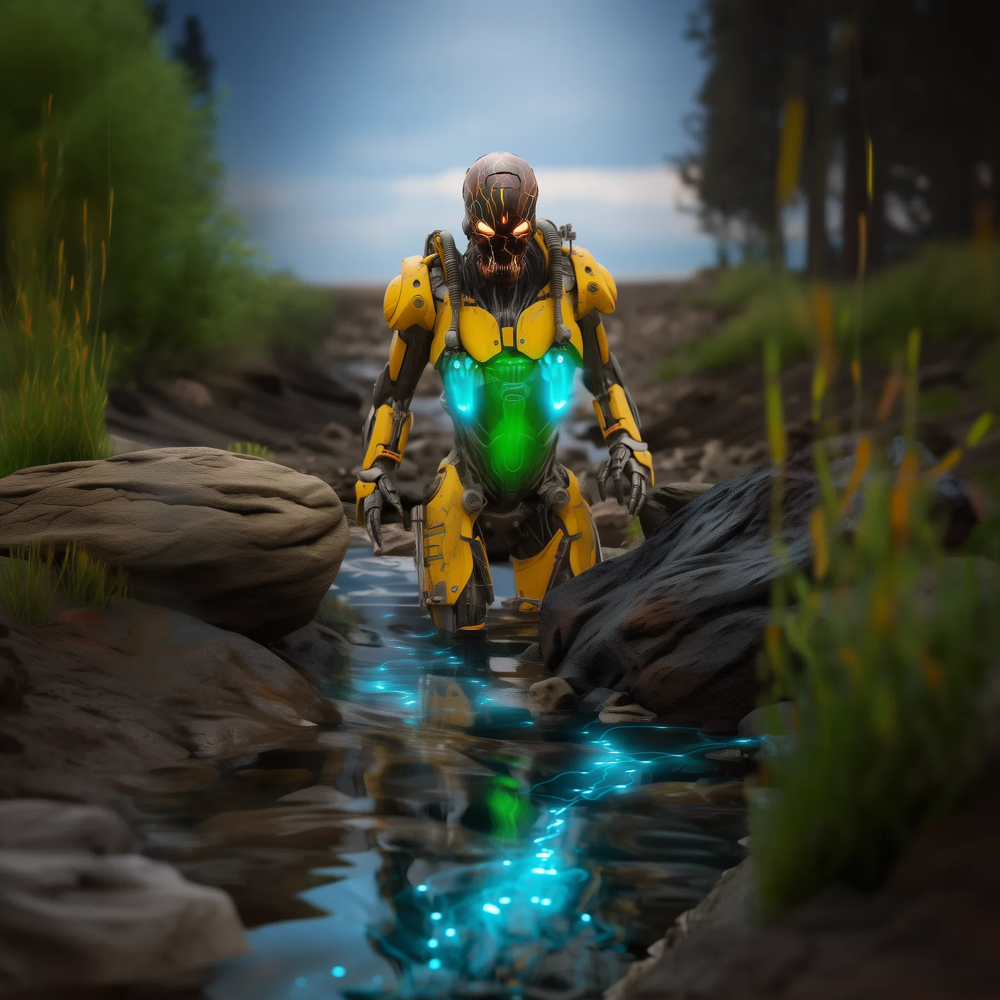
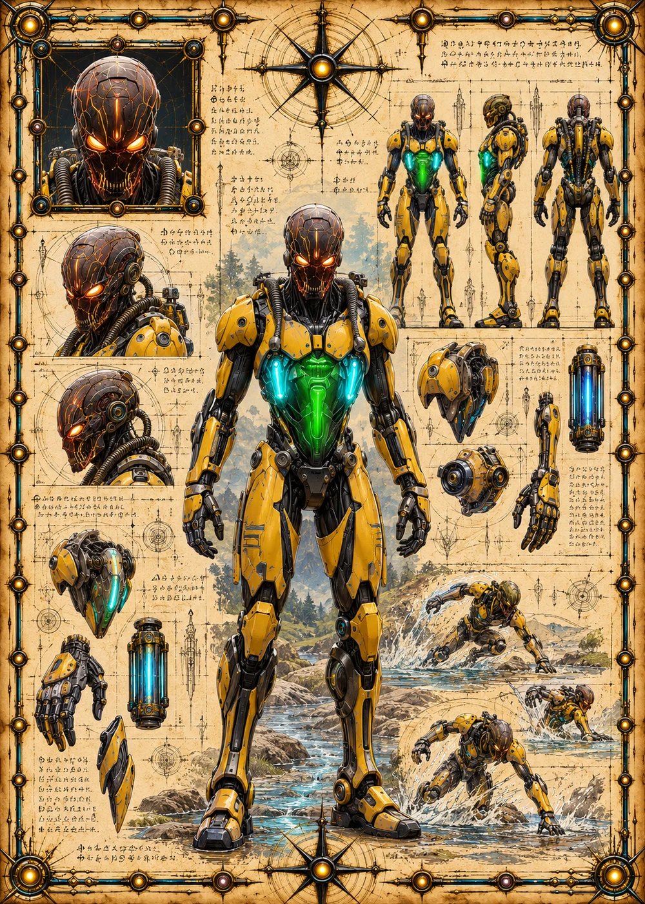

©
©
GENEZYS ARCHIVE · Earth 2 · Synthbot
Jyntrak
Sorrow Imbiber

Archive record
Jyntrak feeds on despair, and every raid on Earth 1 leaves plenty behind. The Energy Spike silences an enemy's special and pierces them in one violent surge. Some Corsairs swear that Jyntrak's pilot no longer sleeps at all.
Combat signature
Energy Spike
110 Cosmara
370 Animus
310 Vitalis
Drains consciousness in violent surge: Freezes 1 enemy's special for 1 round and deals 150 pierce damage.
Genezys 06:08 ™&©2026LEGIONS
